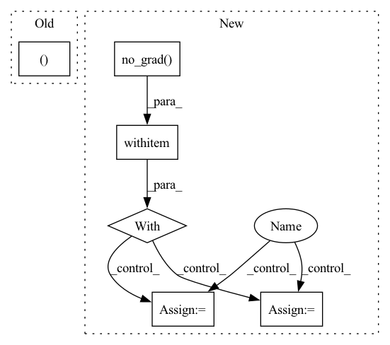

Pattern ID :5940
Before Change
deterministic: bool = False) -> ActionType:
implementation of :class:`~maze.core.agent.policy.Policy`
action, _ = self.compute_action_with_logits(observation, actor_id, deterministic)
return action
@override(Policy)After Change
deterministic: bool = False) -> ActionType:
implementation of :class:`~maze.core.agent.policy.Policy`
with torch .no_grad():
policy_out = self.compute_substep_policy_output(observation, actor_id)
if deterministic :
action = policy_out.prob_dist.deterministic_sample()
else:
action = policy_out.prob_dist.sample()
return convert_to_numpy(action, cast=None, in_place=False)
@override(Policy)In pattern: SUPERPATTERN
Frequency: 3
Non-data size: 6
Instances Fragment ID: 20857082
Project Name: enlite-ai/maze
Commit Name: 53f2ea0b5fb4905306f4410f61af75372256fbcc
Time: 2021-06-24
Author: office@enlite.ai
File Name: maze/core/agent/torch_policy.py
M Class Name: TorchPolicy
N Class Name: TorchPolicy
M Method Name: compute_action(6)
N Method Name: compute_action(6)
M Parent Class: TorchModel,Policy
N Parent Class: TorchModel,Policy
M File Name: maze/core/agent/torch_policy.py
N File Name: maze/core/agent/torch_policy.py
M Start Line: 197
M End Line: 198
N Start Line: 179
N End Line: 185
Before Change
def visualize_4_way(cfg):
// MODELS
seg_model_path, pred_rgb_model_path, pred_mask_model_path, pred_colorized_mask_model_path = model_paths
seg_model = torch.load(cfg.seg)
pred_rgb_model = torch.load(cfg.pred_rgb)
pred_mask_model = torch.load(cfg.pred_mask)After Change
test_loader = DataLoader(test_data, batch_size=1, shuffle=True, num_workers=4)
iter_loader = iter(test_loader)
with torch .no_grad():
for i in tqdm(range(10)):
frames = next(iter_loader).to(DEVICE) // [1, T, 3, h, w]
frames_vis = postprocess_img(frames.squeeze(dim=0)) // [T, 3, h, w]
input = frames[:, :VIDEO_IN_LENGTH] // [1, t, 3, h, w]
pred_rgb = pred_rgb_model.pred_n(input, pred_length=VIDEO_PRED_LENGTH)
pred_rgb = torch.cat([input, pred_rgb], dim=1) // [1, T, 3, h, w]
pred_rgb_vis = postprocess_img(pred_rgb.squeeze(dim=0)) // [T, 3, h, w]
pred_rgb = torch.stack([seg_model(pred_rgb[:, i]) for i in range(pred_rgb.shape[1])], dim=1)
pred_rgb = pred_rgb.argmax(dim=2).squeeze() // [T, h, w]
pred_then_colorized_vis = colorize_semseg(postprocess_mask(pred_rgb), num_classes=SYNPICK_CLASSES).transpose(0, 3, 1, 2) // [T, 3, h, w]
frames_seg = torch.stack([seg_model(frames[:, i]) for i in range(frames.shape[1])], dim=1).argmax(dim=2) // [1, T, 1, h, w]
frames_seg_in = torch.stack([(frames_seg == i) for i in range(SYNPICK_CLASSES)], dim=2).float() // [1, T, c, h, w] one-hot float
input_seg = frames_seg_in[:, :VIDEO_IN_LENGTH] // [1, t, c, h, w]
pred_mask = pred_mask_model.pred_n(input_seg, pred_length=VIDEO_PRED_LENGTH).argmax(dim=2) // [1, n, 1, h, w]
pred_mask = torch.cat([input_seg.argmax(dim=2), pred_mask], dim=1).squeeze() // [T, h, w]
pred_mask_vis = colorize_semseg(postprocess_mask(pred_mask), num_classes=SYNPICK_CLASSES).transpose(0, 3, 1, 2) // [T, 3, h, w]
frames_colorized = colorize_semseg(postprocess_mask(frames_seg.squeeze()), num_classes=SYNPICK_CLASSES)
frames_colorized_vis = frames_colorized.transpose(0, 3, 1, 2) // [T, 3, h, w]
input_colorized = preprocess_img(frames_colorized[:VIDEO_IN_LENGTH]).to(DEVICE).unsqueeze(dim=0) // [b, t, 3, h, w]
colorized_then_pred = pred_colorized_mask_model.pred_n(input_colorized, pred_length=VIDEO_PRED_LENGTH) Fragment ID: 20857070
Project Name: ais-bonn/vp-suite
Commit Name: 13016d4ab8ba4f8e7ee087155a6c5171f4d00ba3
Time: 2021-08-02
Author: boltres@ais.uni-bonn.de
File Name: scripts/visualize_4_way.py
M Class Name: AnonimousClass
N Class Name: AnonimousClass
M Method Name: visualize_4_way(1)
N Method Name: visualize_4_way(1)
M Parent Class:
N Parent Class:
M File Name: scripts/visualize_4_way.py
N File Name: scripts/visualize_4_way.py
M Start Line: 16
M End Line: 73
N Start Line: 17
N End Line: 74
Before Change
print("model loaded")
dataiter = iter(dataloader)
images, labels = dataiter.next()
for i, data in enumerate(dataloader, 0):
inputs, labels = dataAfter Change
total_pred = {classname: 0 for classname in classes}
// again no gradients needed
with torch .no_grad():
for data in dataloader:
inputs, labels = data
inputs, labels = inputs.to(device), labels.to(device)
outputs = model(inputs)
_, predictions = torch.max(outputs, 1)
// collect the correct predictions for each class
for label, prediction in zip(labels, predictions):
if label == prediction:
correct_pred[classes[label]] += 1
total_pred[classes[label]] += 1
// print accuracy for each class Fragment ID: 20857078
Project Name: loretoparisi/hf-experiments
Commit Name: 286971f578836b95fec5d7123b3b23cd5fa01603
Time: 2021-05-11
Author: loretoparisi@gmail.com
File Name: src/mlpvision/train.py
M Class Name: AnonimousClass
N Class Name: AnonimousClass
M Method Name: test(5)
N Method Name: test(4)
M Parent Class:
N Parent Class:
M File Name: src/mlpvision/train.py
N File Name: src/mlpvision/train.py
M Start Line: 156
M End Line: 176
N Start Line: 158
N End Line: 192